In 2012, one year after the March 11 earthquake and tsunami, Haruka Komori moved to Rikuzentakata in Iwate Prefecture as a recovery volunteer. She met Hiromi Abe, a host at the town’s temporary disaster FM station, about two months later, and began filming her about six months after that. Komori stayed in Rikuzentakata for more than three years, building a relationship with Abe and the community long before the camera became part of it.
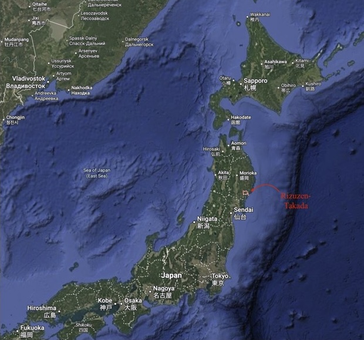
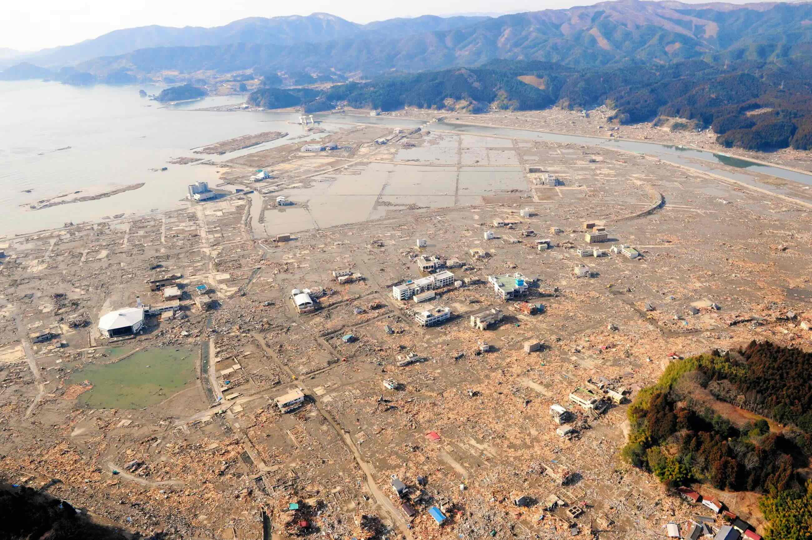
In 2012, one year after the March 11, 2011 earthquake and tsunami in Northeast Japan, Komori moved to Rikuzen-Takada (one of the towns on the Pacific coast most severely devastated) as a recovery volunteer. She had begun her career as a filmmaker, not specifically in documentaries. Komori met Hiromi Abe, who started running and hosting a temporary disaster-recovery FM radio station. After about six months in the community, Komori approached Abe about a documentary project. Abe had no prior broadcasting experience when she started serving the community through her radio station, but continued for three years and nine months, with Komori by her side for much of this time.
Komori stayed in Rikuzen-Takada for over three years, during which she filmed about half a dozen projects, sometimes collaborating with another artist, Natsumi Oze. Komori notes that her approach to filming people in the devastated community was to build trust with them first, becoming part of the community herself, as the people worked through recovery from their great losses. Komori is a documentary filmmaker who takes the time to establish trust with her subjects.
In the 2020 interview, Komori notes that she did not film any shots solely to show the landscape. All of the shots that include landscapes also include people or objects that she cinematically documents. The government decided to elevate Rikuzen-Takada using earth excavated from the surrounding mountains, which were subsequently leveled. Her camera captures scenes like this in the landscape.
“I never shot landscapes just to fill in between scenes. When I film while walking, I’m not consciously thinking, ‘I’m shooting a landscape.’ I’m searching for something I can only find through the act of filming… There was definitely anger bubbling inside me, but I realized that anger doesn’t really show on camera. No matter how angry I felt, the landscape would overwhelm it.” — Komori, Cine Nouveau, Nov. 2020
The same three elements that give fiction films their flavor also shape documentaries:
Nichols (2017) acknowledges: “… guarantee no absolute separation between fiction and documentary. Some documentaries make strong use of practices such as scripting, staging, reenactment, rehearsal…” Some fiction films, conversely, mimic a documentary style. But in chapter 1 he sets out “some of the ways in which commonsense definitions of documentary can be refined.”
Documentaries:
Nichols then tightens this into a working definition: “Documentary film speaks about situations and events involving real people (social actors) who present themselves within a framework. This frame conveys a plausible perspective on the lives, situations, and events portrayed. The distinct point of view of the filmmaker shapes the film into a way of understanding the historical world directly rather than through a fictional allegory.” Documentary is a representation, not a reproduction.
Komori often emphasizes not interfering with the people and events she documents. She is so sensitive to this approach that she sometimes chooses not to enter certain areas where her subjects work or live, even if she has permission. Instead, she might film a scene from the next room or a hallway. She never tries to control the situation for her shots, which results in limitations on the angles and types of shots she can capture.
“For me, a key question in filmmaking is how to be allowed to be in a space with a camera. I’m there holding it, but I don’t want to dominate, nor do I want to hide. I search for the subtle distance, the right place for the camera to rest.” — Komori, 2020
In the same interview, Komori said she intentionally avoids filming or including anything unrelated to the core topic of her documentary. For example, she avoids capturing scenic views even if they are part of the town where her subject resides. All landscape shots in Listening to the Air include elements relevant to the documentary’s theme or show views connected to her subject’s perspective.
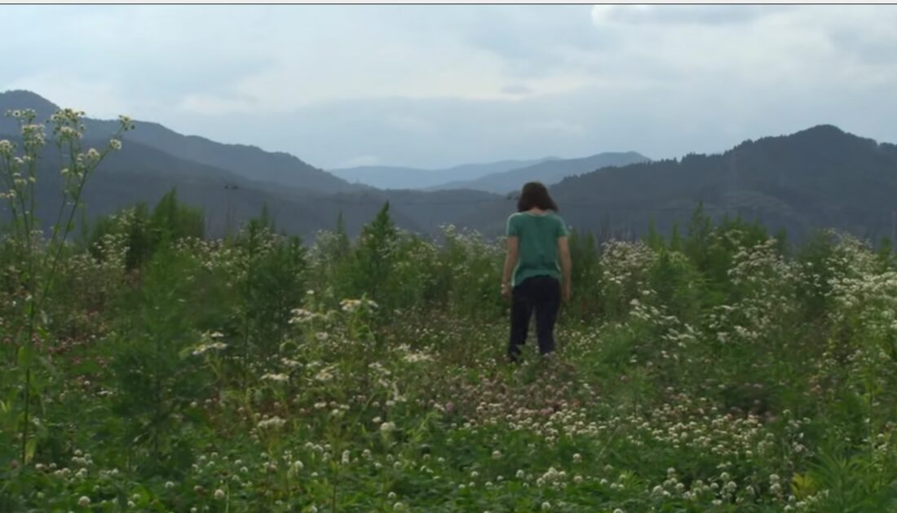
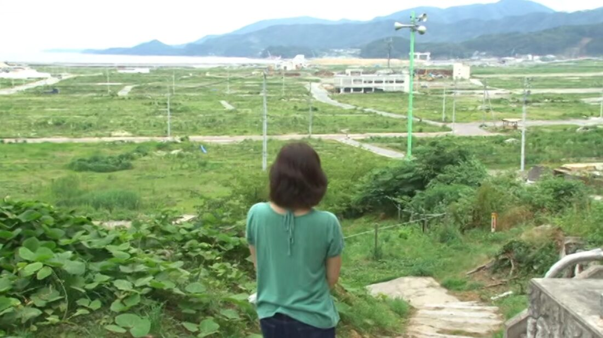
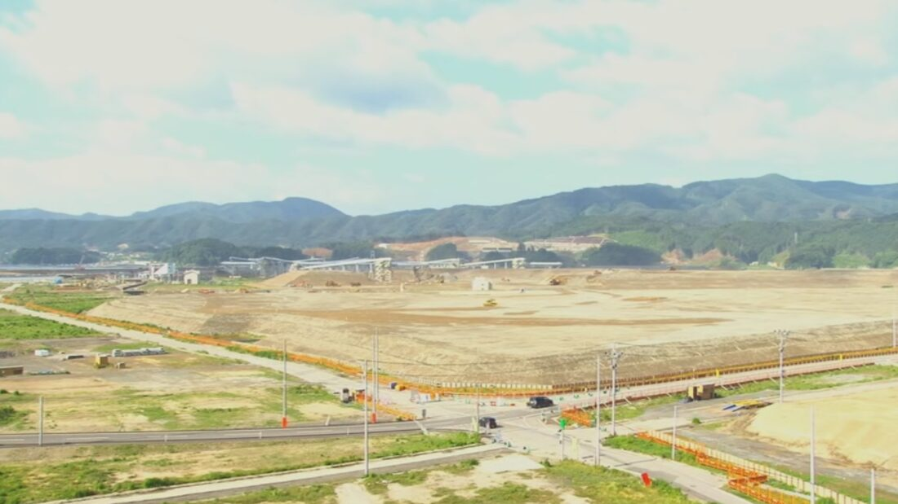
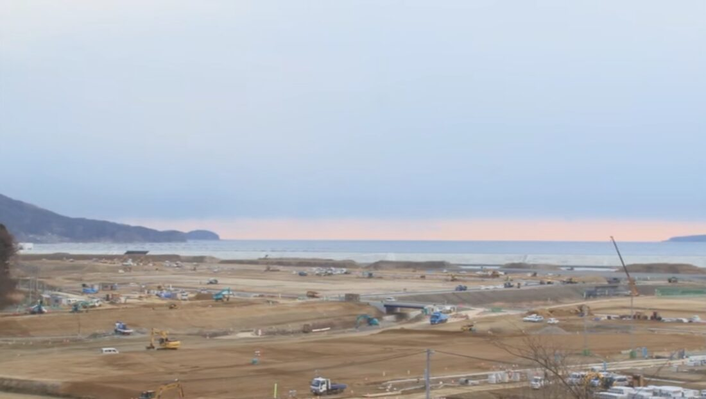
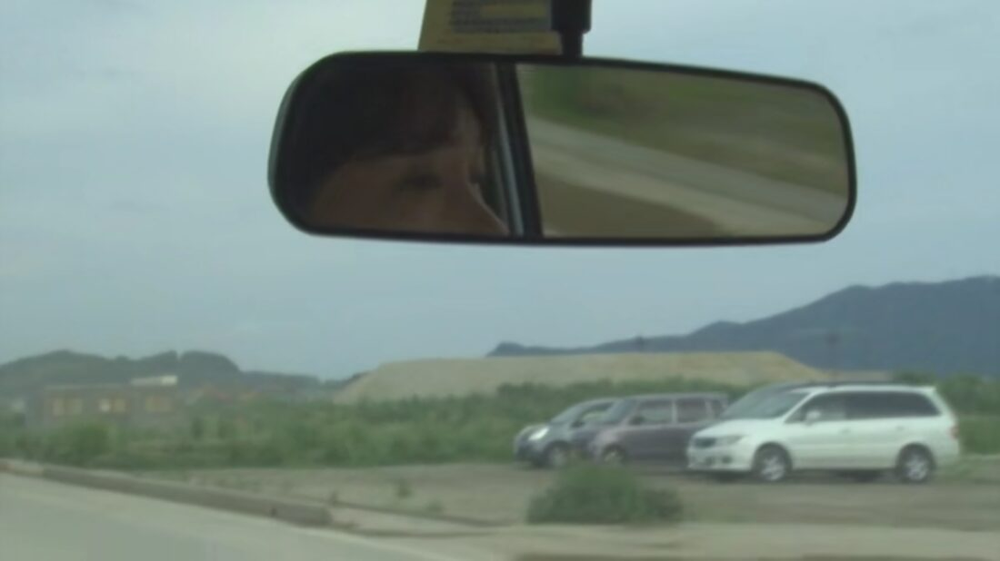
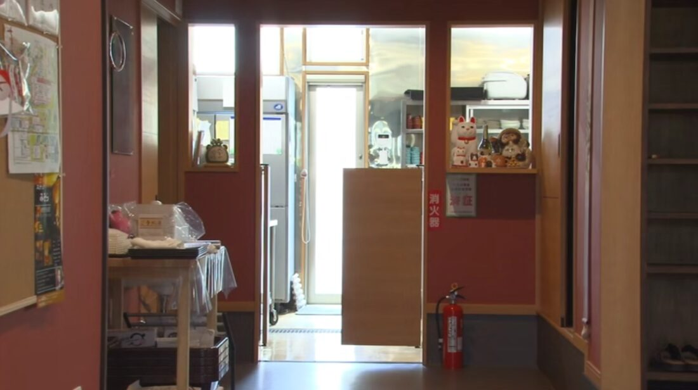
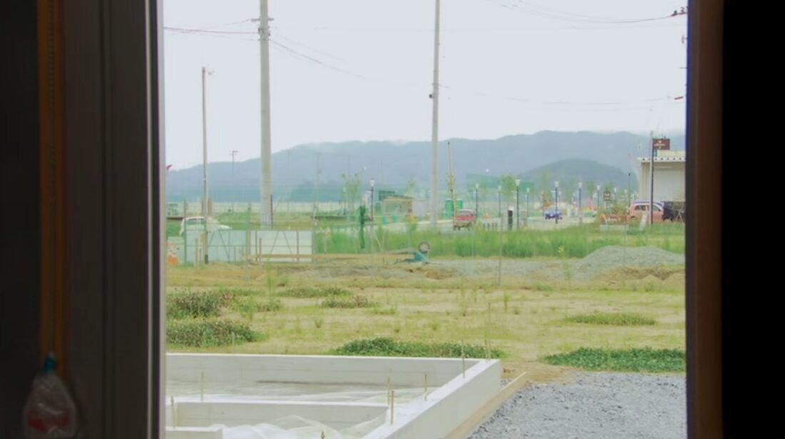
The limitations Komori imposes on her documentaries appear to stem from the nature of her work. Her purpose in documenting Rikuzen-Takada, for instance, is to create a record for the future. She often says her films about Rikuzen-Takada are meant to preserve what survivors of the 2011 tsunami did for each other and more. This raises the question:
Q: Does she have space for her own artistic expression?
A: While her art may be constrained by her commitment to authentic documentation, she pursues it within these limits, and indeed she succeeds.
In the 2020 interview, Komori reframed this purpose in temporal terms. The period people call “reconstruction,” she says, is hard to preserve in memory — “it’s a kind of interim time, a bridge between disaster and rebuilding. Ten or twenty years from now, that ‘in-between time’ might simply vanish from people’s memories. I wanted to record that fleeting period.” The film’s constraint — never to interfere, never to fill, never to dramatize — is what makes it usable as a record for a future viewer who was not there.
Abe-san’s hands. The opening sequence starts with a zoom shot on Abe-san’s hands as she works at the radio station. We see her hands again near the end, this time working in a restaurant she runs. This parallelism is impressive, as her radio work seems to nourish the souls of the people of Rikuzen-Takata, many of whom have lost family members. It is a small surprise at the end to find out that Abe-san is in the restaurant business (she mentions her “shop” during an interview, explaining that her children visited her parents more because of it; in the English translation, this “shop” is rendered as “restaurant,” which gives the surprise away). Abe-san’s role in the restaurant business gives an impression of continuity in her work for the town before and after the tsunami, as she continues nourishing the community with her own hands.
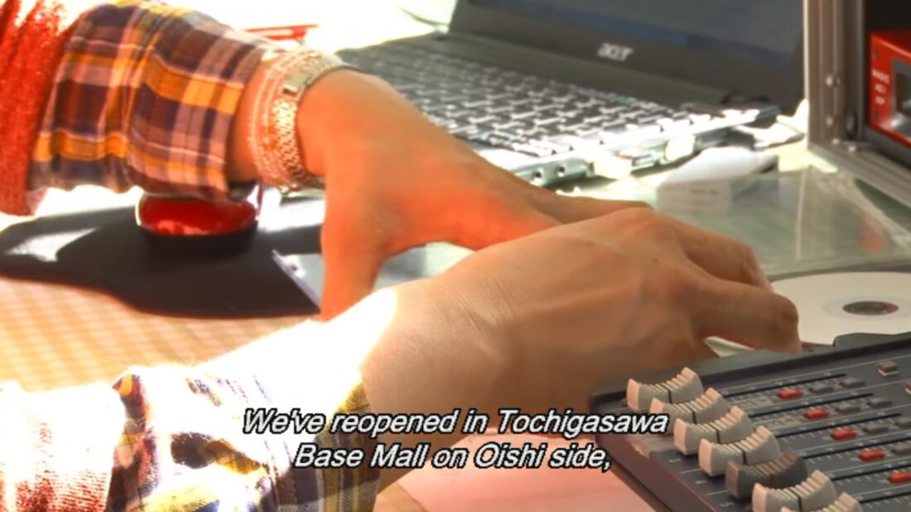
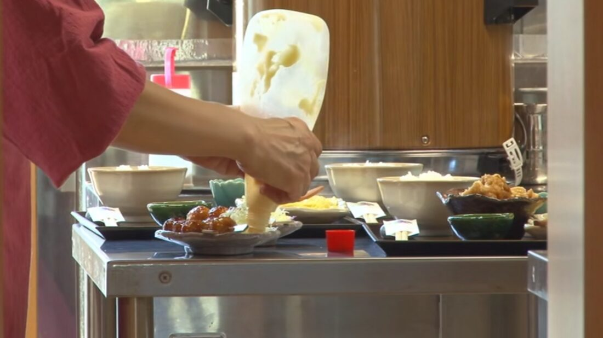
“When someone’s hands move — or when their body begins to move — you can glimpse how they’ve lived. That’s what I love to capture.” — Komori, 2020
Note also the change in distance between the two shots: the radio-station opening is close and handheld; the kitchen ending is fixed and far. Komori said she filmed the kitchen scene twice and couldn’t get close: “I could feel that I could no longer film her with that same closeness. Just as my way of filming the ground had changed, my way of filming people at work had changed too.” The change in distance is itself a record of the years that have passed.
Abe-san broadcasts a minute of silence on the 11th day of every month (tsukimeinichi: in Japan, people commemorate the deceased on the monthly anniversary of the day they passed). During an interview she was once asked why she didn’t record the silence instead of broadcasting it live every time. She recalls her frustration and response: “You must be stupid asking me that.” She explains that broadcasting it live is important because, by observing a minute of silence every 11th of the month, people can reflect on their own loss and changes as they move forward from the 11th of March, 2011.
Komori, in turn, captures the whole minute of silence without shortening it. In the last 15 seconds of this silent footage, the sun seems to come out from behind the clouds, casting light through the curtains as the room from which Abe-san is broadcasting grows brighter at the end of the minute, as if the Air is responding back. We can’t help but wonder if Komori had several shots to choose from or if this simply happened at the moment she decided to film. Additionally, Abe-san appears quite comfortable expressing the frustration she felt at the ‘stupid’ question, likely because her interviewer, Komori, spent over three years with her in the community.
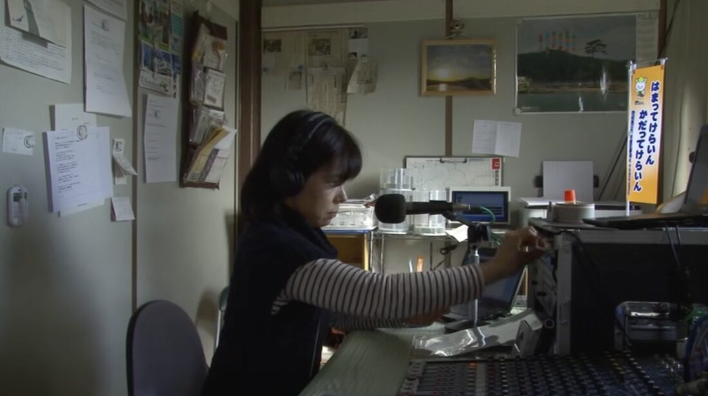
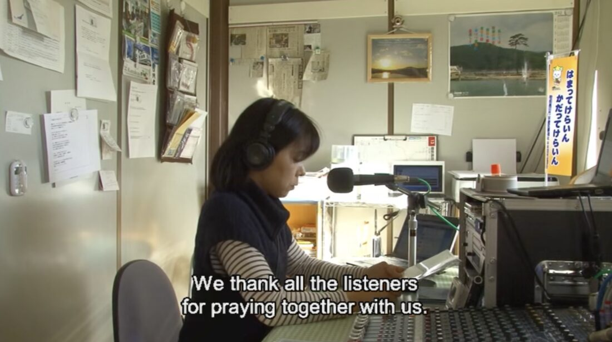
“Her voice, and the voices broadcast from Disaster FM, allowed listeners to imagine so much precisely because those things couldn’t be seen. Through what was invisible, the radio let people see something in their minds — the landscapes of memory and loss… The radio made visible those invisible presences.” — Komori, 2020
The minute-of-silence sequence is the film’s argument for itself: a documentary about a radio host has to find a cinematic equivalent for radio’s power to make absence audible. Komori’s answer is to let the room change, without comment, for a full sixty seconds.
Komori mentioned in interviews that the title Listening to the Air has a double meaning. Besides the fact that the film is about a radio station broadcasting on air, it also suggests listening to the deceased in heaven or somewhere in the sky (the Japanese title is literally “Listening to the sky”). With this double meaning in mind, the kite sequence gains added significance. It has been a tradition in the Rikuzen region (where other towns were also hit by the tsunami) to fly kites around March 11th. Komori effectively connects two images of reaching out to the souls of the deceased by letting something into the air: kites and words in the radio.
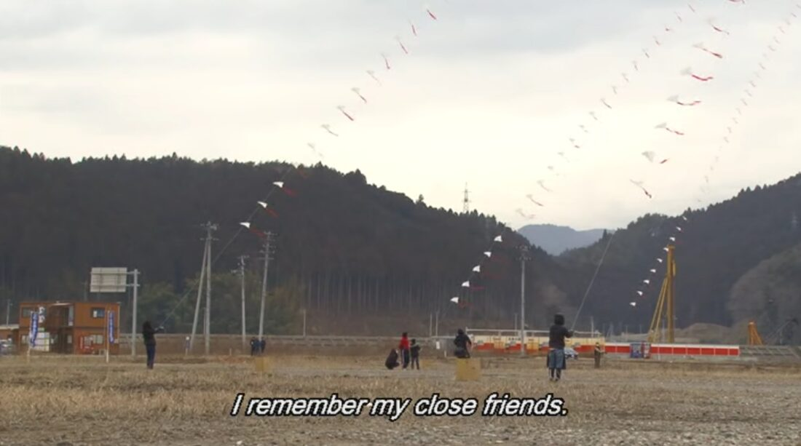
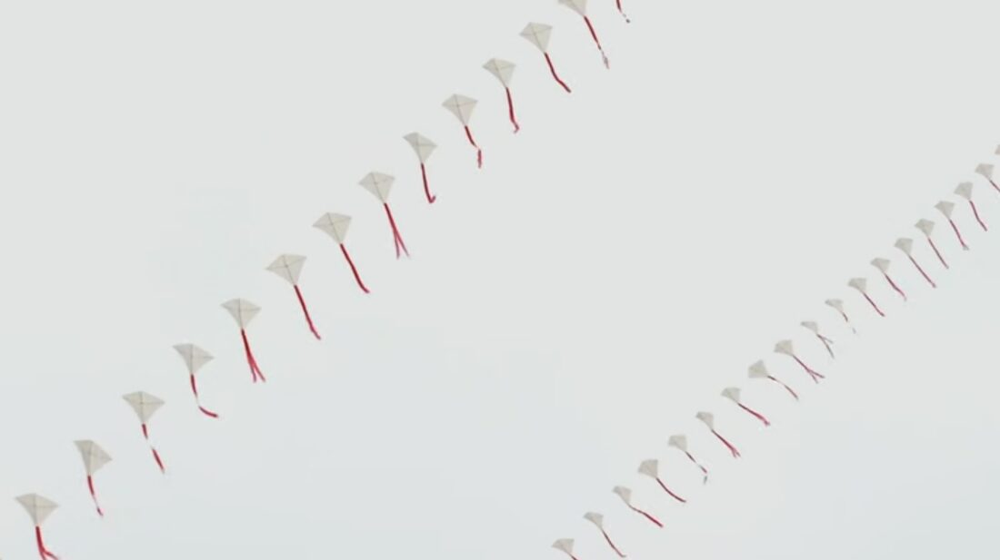
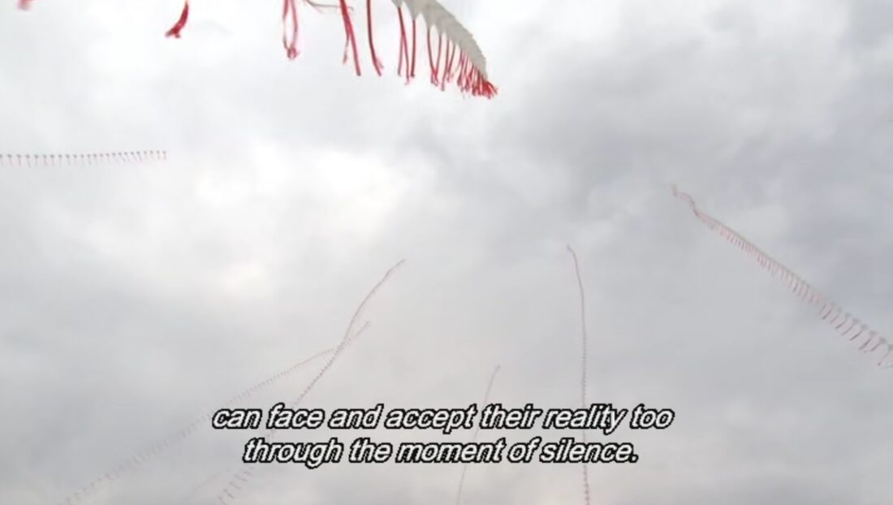
In the 2020 interview, Komori described the shift in her own attention while making the film. She had been fixated on the ground itself, on the buried twelve meters of old town beneath the new raised earth. “But those things can’t really be seen. At the same time, while working on this film, I noticed that Ms. Abe’s thoughts for the deceased — and perhaps not only for them — seemed to reach upward, toward the sky. When I realized that, I felt, ‘It’s not just the ground.’ Seeing the sky opened up my vision; suddenly, I could search for the invisible in the air itself.” The kite sequence is the visible trace of that turn.
All of Komori’s cinematic moments are composed of shots made in adherence to her own documentary-making principles, rooted in sympathy, compassion, thoughtfulness, and consideration for her subjects. When the documentary covers particularly sensitive themes — such as losing loved ones, or the original town being buried and leveled by earth scraped from surrounding mountains, which were themselves leveled down — Komori’s close and intimate position within the community, established genuinely from her concern for the people’s well-being and recovery, allows her cinematic expressions to align completely with the intentions of the community.
“She often used ‘we’ when she spoke. It wasn’t the voice of a single person; it was as if she gathered the voices of many. I think it came from her sense of addressing both the people living there and those who had passed away. It was a voice that said, ‘We are still here, living.’ Not everyone could convey that, but Ms. Abe could.” — Komori on Abe’s voice, 2020
In Nichols’s terms, Abe is the ideal “social actor” for a documentary like this one: not a victim performing victimhood, not an announcer performing professionalism, but a person presenting herself in everyday life, and in doing so giving voice to a community. Komori’s job is to be close enough that this presentation happens, and far enough that it isn’t for the camera.
Errol Morris’s documentary film, Gates of Heaven (1978), takes a very different approach compared to Komori’s. However, it still appears to adhere to Nichols’s three main points, though not entirely.
Mise-en-scène. Did Morris alter the display of items in the rooms, or add any props he brought along? If the objects genuinely belong to the interviewee but were rearranged for filming, how much does this violate documentary rules? Nichols would say: documentary is representation, not reproduction; what matters is whether the framing offers a plausible perspective on real people. But how far can the staging go before the film becomes a fiction that happens to be about real subjects?
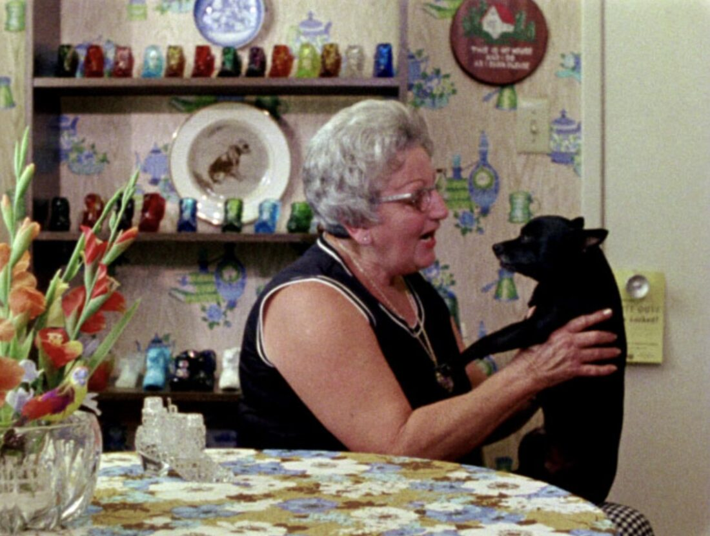
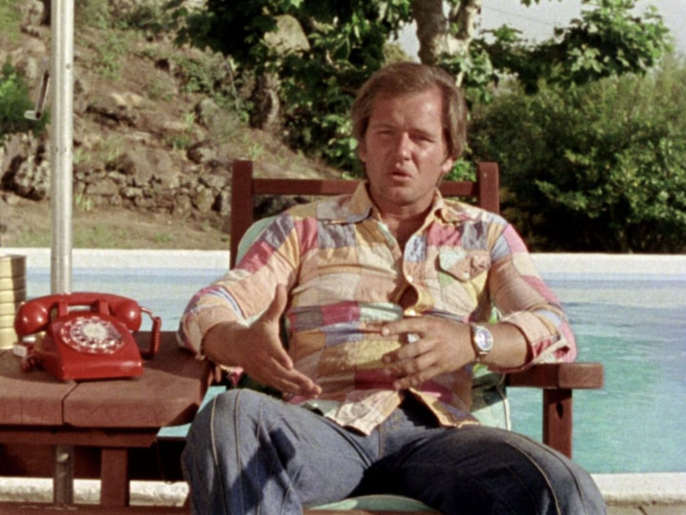
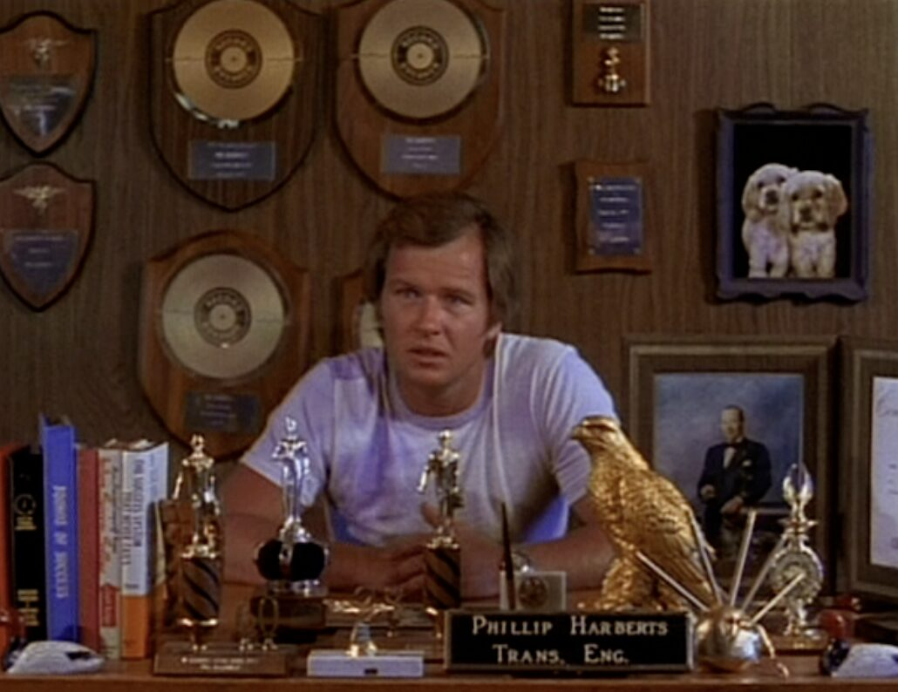
Shots. The film features emphatic camera techniques. While informative, it also satirizes aspects of pet cemeteries. Sometimes it’s hard to determine whether a specific camera angle was chosen solely to convey truth or for stylistic purposes. Ultimately, is there a strict rule for framing objects in documentary films? Style choices might serve to convey mood. But does controlling mood compromise truth?
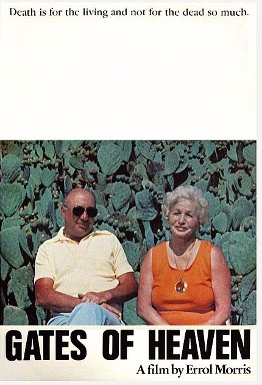
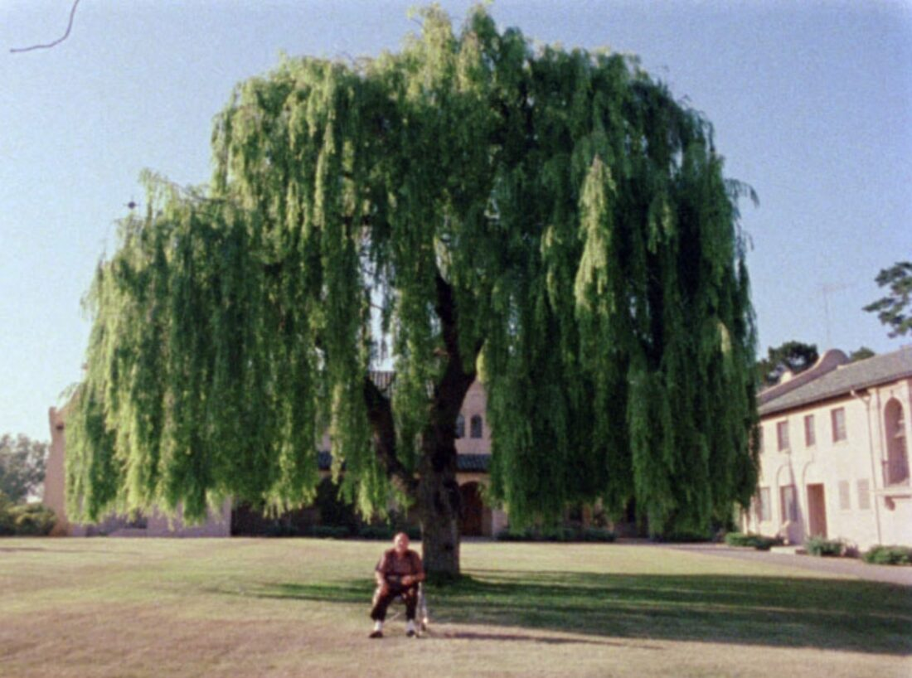
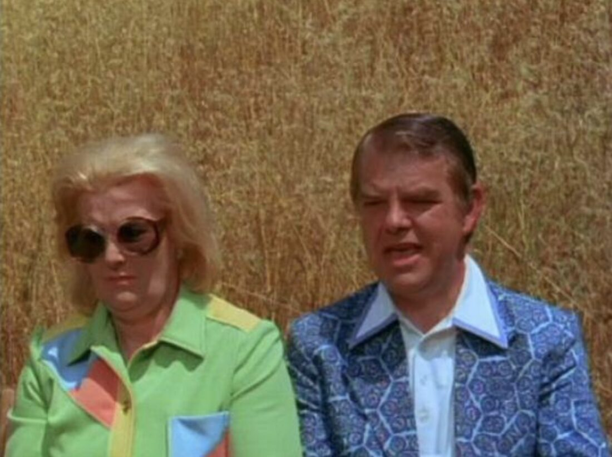
Editing. Morris uses different editing techniques to portray the subject. For instance, members of the family that owns the pet cemetery business discuss various topics unrelated to the business, including playing guitar on a hill. There’s even a sequence dedicated to this. Did Morris capture a genuine daily routine, or did he prompt them by saying something like, “Hey, can you play for us now?” Nichols’s term for this kind of cutting is evidentiary editing: shots are joined less by continuity in time and space than by a controlling perspective. The argument is the filmmaker’s; the people are real.
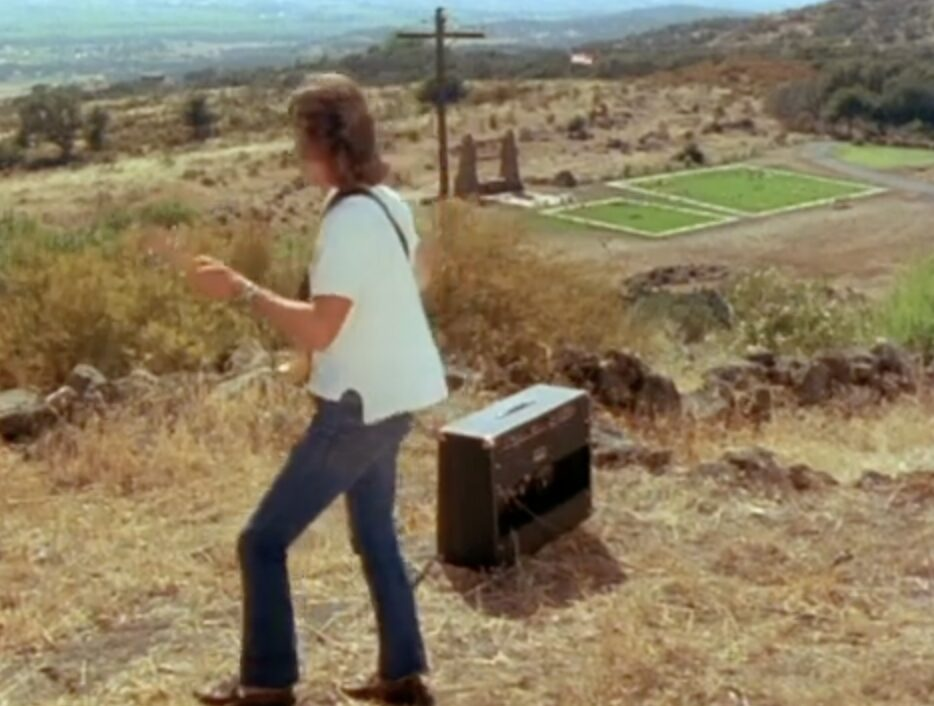
Both Gates of Heaven and Listening to the Air fit Nichols’s working definition: they speak about real people who present themselves within a frame, and the frame conveys a plausible perspective on the historical world. Where they diverge is in who decides what the frame should be.
“When I’m filming, ‘listening’ doesn’t just mean hearing words. It includes movements, the flow of time, the light in the room, and the sounds outside… All of that conveys meaning beyond words. For me, filming itself may be inseparable from listening. Even if the camera can’t capture everything, I think to film is, in a sense, to listen.” — Komori, Cine Nouveau, Nov. 2020
If Nichols’s frame is the filmmaker’s point of view, Komori’s is the listener’s. That is one way to make a documentary; Gates of Heaven is another. Both are inside the form. Both are arguments about what a camera, pointed at real people, can be for.